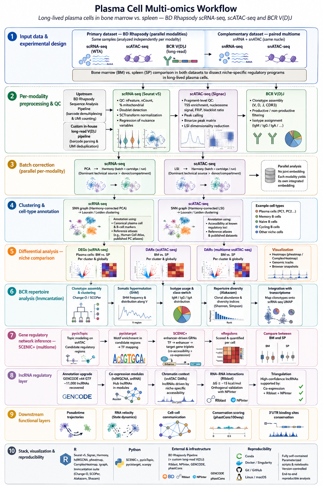

Computational biologist · Author · Late bloomer
Single-cell and multi-omics bioinformatics consulting — from raw sequencing data to the regulatory networks that shape cell identity. I work with academic labs, biotech, and pharma on scRNA-seq, scATAC-seq, multiome, and immune repertoire analysis.
Featured case study
An end-to-end single-cell pipeline investigating why long-lived plasma cells persist in bone marrow but not in spleen — integrating scRNA-seq, scATAC-seq, BCR repertoire, and gene regulatory network inference.

Parallel scRNA-seq, scATAC-seq, and long-read BCR V(D)J from BD Rhapsody, complemented by paired single-nucleus multiome (snRNA + snATAC). Bone marrow vs. spleen comparison.
Seurat v5 + Signac with Harmony integration; SCENIC+ gene regulatory networks; hdWGCNA co-expression; lncRNA regulatory layer combining GENCODE v44, RIblast, and NPInter validation.
Identified a BM-specific AP-1/KLF regulatory axis, MIR155HG as a niche-specific lncRNA hub, and a triple-validated NEAT1→MSI2 interaction supporting plasma cell longevity.
Services
scRNA-seq and snRNA-seq analysis end-to-end: QC, integration, clustering, cell-type annotation, differential expression, trajectory analysis.
scATAC-seq, snATAC-seq, and multiome workflows. Peak calling, motif analysis, peak-to-gene linkage, and chromatin-driven cell-state interpretation.
SCENIC+ and pycisTopic for enhancer-driven GRNs. hdWGCNA for co-expression modules. Integration of transcriptomic and epigenomic regulation.
BCR and TCR analysis using the Immcantation framework. Clonotype assembly, somatic hypermutation, isotype usage, repertoire diversity, transcriptome integration.
lncRNA regulatory networks integrating GENCODE annotation, co-expression, RIblast RNA-RNA interactions, and chromatin accessibility.
Modular, parameterized R and Python pipelines. Version-controlled, containerized when needed, and built for handoff to wet-lab collaborators.
About
I'm a computational biologist with deep expertise in single-cell and multi-omics genomics, focused on the gene regulatory programs that shape immune cell identity. My current work integrates scRNA-seq, snATAC-seq, and lncRNA regulatory analysis to understand why long-lived plasma cells survive in some tissue niches but not others.
I'm also a writer. My debut novella, The Star That Waited, explores late blooming, love, and motherhood later in life — themes that aren't unrelated to my science. Both pursuits ask the same question in different languages: why do some things flourish in one context and not another?
I believe in reproducible work, clear communication, and the quiet conviction that it's never too late to become who you were meant to be.
Get in touch
Whether you have a specific analysis you need help with, an exploratory project that needs a computational partner, or you're just curious about what's possible with your dataset — I'd love to hear from you.